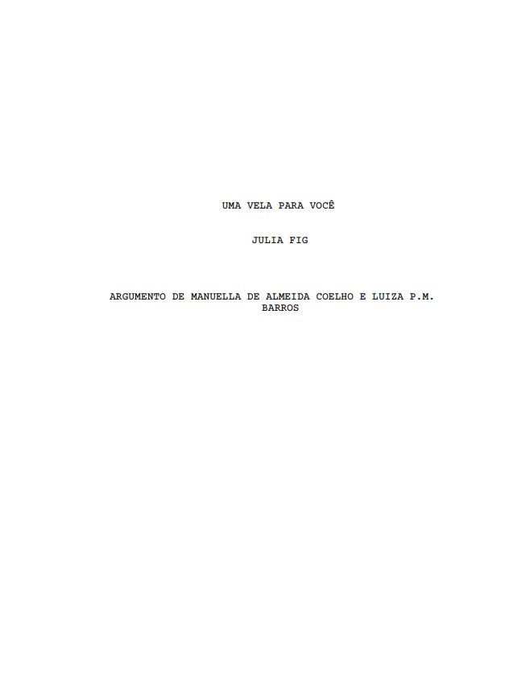

Logline
Apresente a história em uma ou duas frases, destacando protagonista, objetivo e conflito.
Roteiro · 2024
Adicione aqui uma logline curta que apresente o conflito central do roteiro.

Desenvolvimento
Apresente a história em uma ou duas frases, destacando protagonista, objetivo e conflito.
Ana vive tranquila com sua namorada, Elisa, mas, quando seu avô, Guilherme, vem visitar, coisas estranhas começam a acontecer com Elisa.
Conte como nasceu a ideia, quais foram as referências e como o texto se desenvolveu.
Liste os assuntos e questões centrais explorados pelo roteiro.
Página selecionada
8 INT.SALA DE ESTAR DE ANA - MANHÃ
Ana e o avô estão parados em frente à urna, em cima do rack
da TV de Ana. Ao lado dele tem uma vela que está na metade,
Guilherme coloca a rosa ali. Ana encara a urna de forma
estranha. Guilherme abre a boca para dizer algo, mas Ana se
vira e vai em direção a cozinha, feliz novamente. Guilherme
franze a testa.